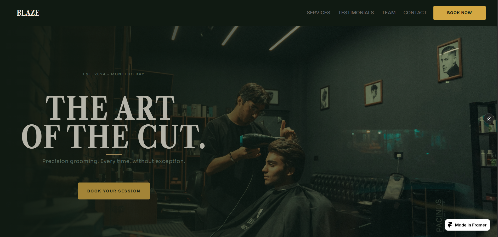
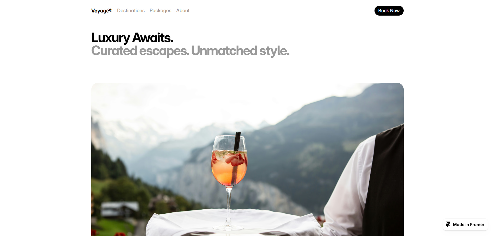

Digital product design
UI / UX
DESIGN
Every project starts with a real problem. Below is the work, from research and key decisions to the friction points resolved and the final screens.
01 • MOBILE APP
Events • Social
VIBELY
Event discovery and social platform for Jamaica, where nightlife meets community.
View Case Study

02 • MOBILE APP
Public Services • Reporting
FIXUPJA
Restoring trust, speed, and simplicity to Jamaica's public infrastructure reporting.
View Case Study

03 • FRAMER / UI
Local Business • Web Design
BLAZE BARBERSHOP
Redesigning the digital presence of a local barbershop to drive leads and build trust.
View Case Study

04 • FRAMER / UI
Travel • Web Design
VOYAGE VACATIONS
Redesigning the digital presence of a local travel agency to drive leads and build trust.
View Case Study